histogram
状态：稳定
histogram 面板用以显示时间序列图。它包括好几种模式和变种，用以显示时间的计数，平均数，最大值，最小值，以及数值字段的和，计数器字段的导数。
参数
轴(axis)参数
mode
用于 Y 轴的值。除了 count 以外，其他
mode设置都要求定义value_field参数。可选值为：count, mean, max, min, total。我的 fork 中新增了一个可选值为 uniq。time_field
X 轴字段。必须是在 Elasticsearch 中定义为时间类型的字段。
value_field
如果
mode设置为 mean, max, min 或者 total，Y 轴字段。必须是数值型。x-axis
是否显示 X 轴。
y-axis
是否显示 Y 轴。
scale
以该因子规划 Y 轴
y_format
Y 轴数值格式，可选：none, bytes, short
注释
注释对象
可以指定一个请求的结果作为标记显示在图上。比如说，标记某时刻部署代码了。
annotate.enable
是否显示注释(即标记)
annotate.query
标记使用的 Lucene query_string 语法请求
annotate.size
最多显示多少标记
annotate.field
显示哪个字段
annotate.sort
数组排序，格式为 [field,order]。比如 [‘@timestamp’,‘desc’] ，这是一个内部参数。
auto_int
是否自动调整间隔
resolution
如果
auto_int设为真，shoot for this many bars.interval
如果
auto_int设为假，用这个值做间隔intervals
在
View选择器里可见的间隔数组。比如 [‘auto’,‘1s’,‘5m’,‘3h’]，这是绘图参数。lines
显示折线图
fill
折线图的区域填充因子，从 1 到 10。
linewidth
折线的宽度，单位为像素
points
在图上显示数据点
pointradius
数据点的大小，单位为像素
bars
显示条带图
stack
堆叠多个序列
spyable
显示审核图标
zoomlinks
显示 ‘Zoom Out’ 链接
options
显示快捷的 view 选项区域
legend
显示图例
show_query
如果没设别名(alias)，是否显示请求
interactive
允许点击拖拽进行放大
legend_counts
在图例上显示计数
timezone
是否调整成浏览器时区。可选值为：browser, utc
percentage
把 Y 轴数据显示成百分比样式。仅对多个请求时有效。
zerofill
提高折线图准确度，稍微消耗一点性能。
derivative
在 X 轴上显示该点数据在前一个点数据上变动的数值。
提示框(tooltip)对象
tooltip.value_type
控制 tooltip 在堆叠图上怎么显示，可选值：独立(individual)还是累计(cumulative)
tooltip.query_as_alias
如果没设别名(alias)，是否显示请求
网格(grid)对象
Y 轴的最大值和最小值
grid.min
Y 轴的最小值
grid.max
Y 轴的最大值
请求(queries)
请求对象
这个对象描述本面板使用的请求。
queries.mode
在可用请求中应该用哪些？可设选项有：
all, pinned, unpinned, selectedqueries.ids
如果设为
selected模式，具体被选的请求编号。
界面配置说明
添加面板的方式在之前的"行和面板"一节中已经有过讲解。在 "Add panel"对话框选择类型为 "histogram" 后，你会看到一系列可配置的选项：
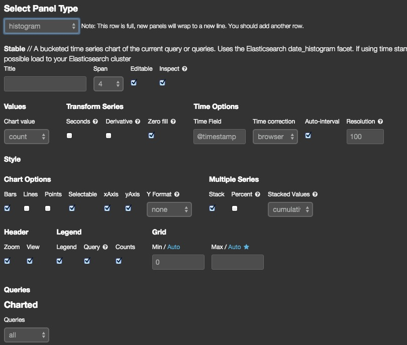
选项分为四类，可以在添加之后，通过点击面板右上角的配置"Configure"小图标弹出浮层继续修改。
通用(General)配置
主要用来修改面板的标题和宽度
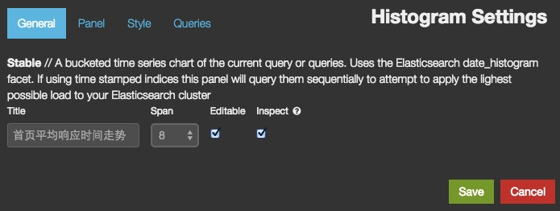
面板(Panel)配置
设置面板向 Elasticsearch 发出何种请求，以及请求中需要使用的变量。
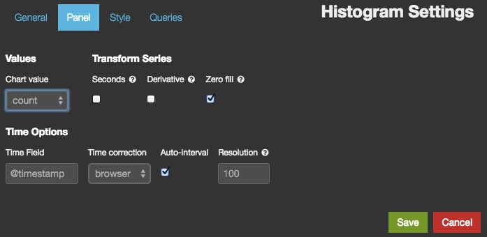
在 histogram 面板中，经常用的
Chart value(即参数部分描述的mode) 有：count
最常见场景就是统计请求数。这种时候只需要提供一个在 Elasticsearch 中是时间类型的字段(即参数部分描述的
time_field)即可。一般来说，都是@timestamp，所以不用修改了。这也是默认的 Logstash 仪表板的基础面板的样式mean
最常见场景就是统计平均时间。这时候配置浮层会变成下面这个样子：
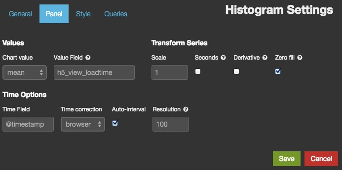
这里就需要提供一个在 Elasticsearch 中是数值类型的字段(即参数部分描述的
value_field)作为计算平均值的数据集来源了。以 nginx 访问日志为例，这里就填 "request_time"。如果你在 Logstash 中使用的是
%{NUMBER:request_time}，那么实际类型还是字符串(请记住，正则捕获是 String 类的方法，也只能生成 String 结果)，必须写成%{NUMBER:request_time:float}强制转换才行。否则，你会看到如下报错信息：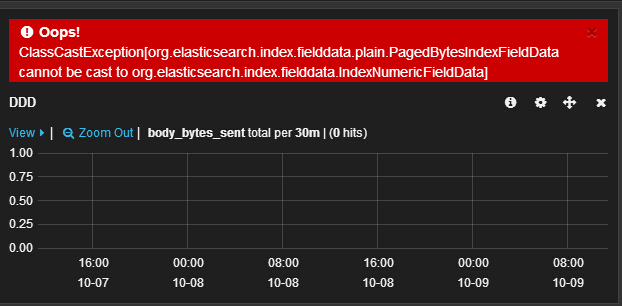
total
最常见场景就是统计带宽。配置界面和 mean 是一样的。同样要求填写数值类型的字段名，比如 "bytes_sent"。
带宽在习惯上会换算成每秒数据，但是通过修改
interval的方式来求每秒数据，对 elasticsearch 性能是一个很大的负担，绘制出来的图形也太过密集影响美观。所以 Kibana 提供了另一种方式：保持interval，勾选seconds。Kibana 会自动将每个数值除以间隔秒数得到每秒数据。(count也可以这样，用来计算 qps 等数据)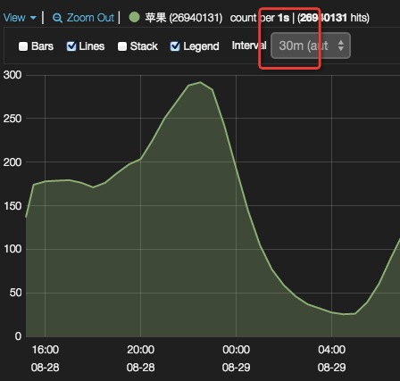
另一个有用的功能，假如你的日志量实在太大，被迫采用抽样日志的方式，可以在 Kibana 上填写
Scale。比如百分之一的抽样日志，Scale框就写 100，带宽数据就会在展示的时候自动翻 100 倍显示出来。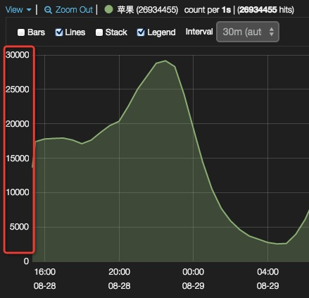
uniq
ES 从 1.1 版本开始通过 HyperLogLog++ 算法支持去重统计聚合。在用 Aggregation API 重写了 histogram panel 后，也可以支持了。
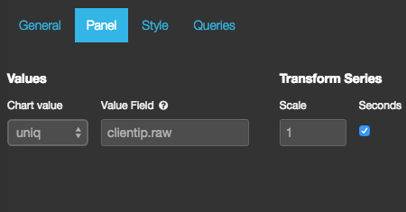
常用场景比如：UV 统计。效果如下：
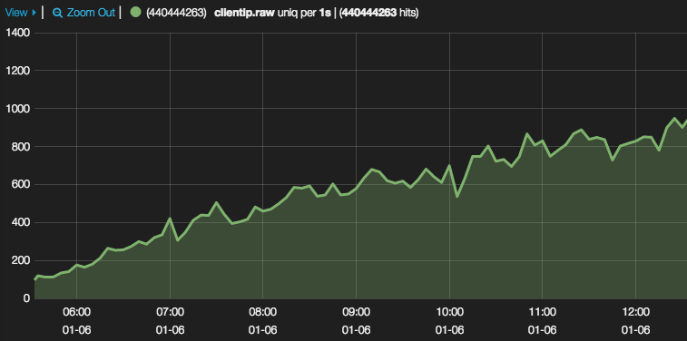
风格(Style)配置
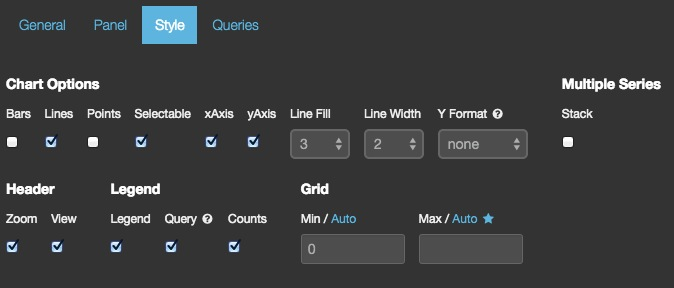
设置获取的数据如何展现。其中小部分(即条带(Bars)、折线(Lines)、散点(Points))可以直接在面板左上角的 "View" 下拉菜单里直接勾选。
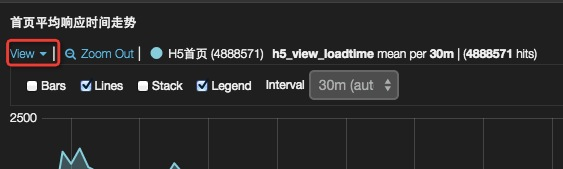
对于带宽数据，可以切换
Y Format为 bytes。则 Y 轴数据可以自动换算成 MB，GB 的形式，比较方便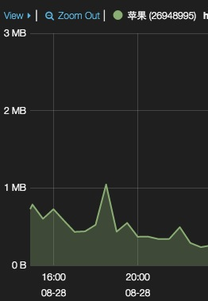
此外，还可以在 Grid 区域定义 Y 轴的起始点和终点的具体值。这可以用来在 Y 轴上放大部分区域，观察细微变动；或者忽略某些异常值。
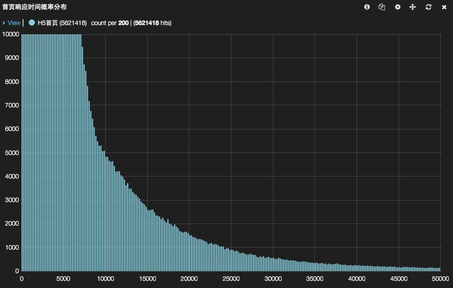
如果面板关联了多个请求，可以勾选以堆叠(
Stack)方式展示(最常见的堆叠展示的监控数据就是 CPU 监控)。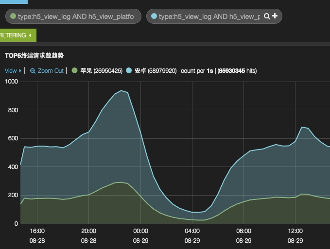
堆叠的另一种形式是百分比。在勾选了
Stack的前提下勾选Percent。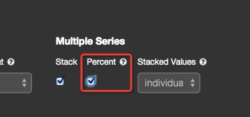
效果如下。注意：百分比是 A / (A + B) 的值，而不是 A / B。
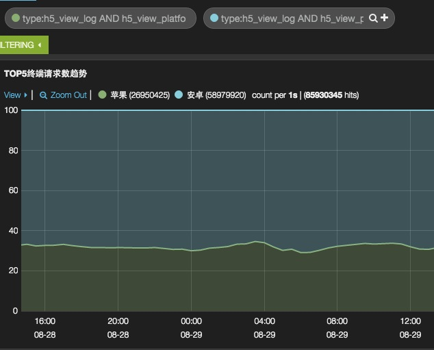
关联请求(Queries)配置
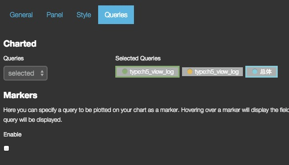
默认的
Queries方式是all。可以使用selected方式，在右侧选择具体的请求框(可多选)。被选中的会出现边框加粗放大效果。多请求的默认效果如下。而堆叠和百分比效果，在之前已经谈过。可以对比上下两图的 Y 轴刻度：
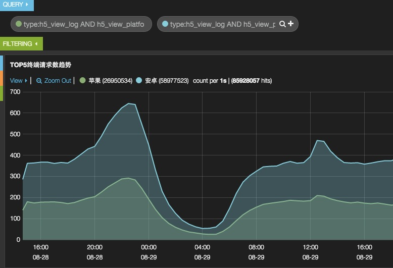